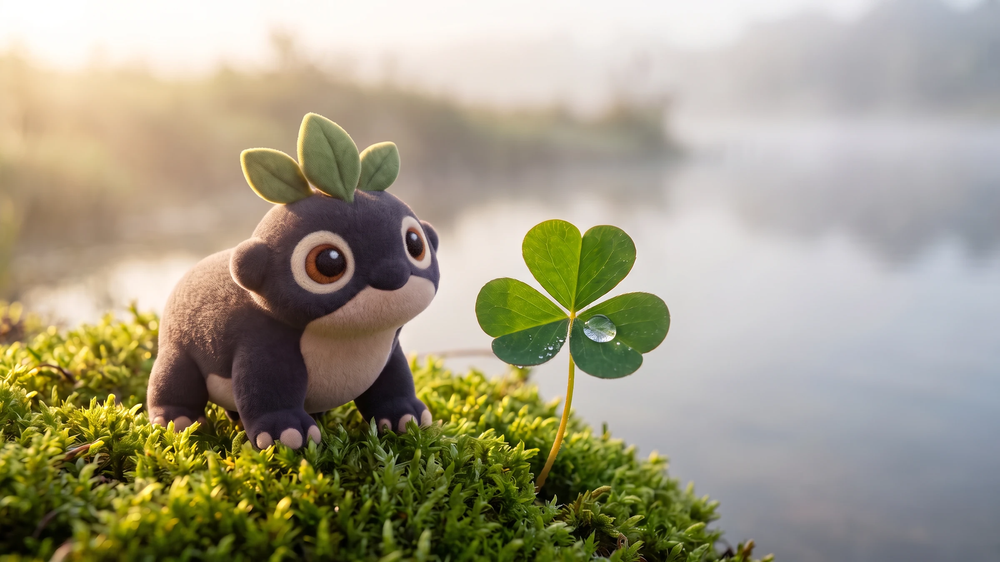
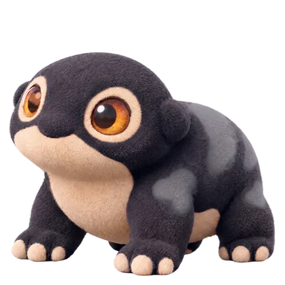
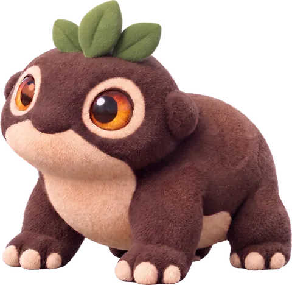
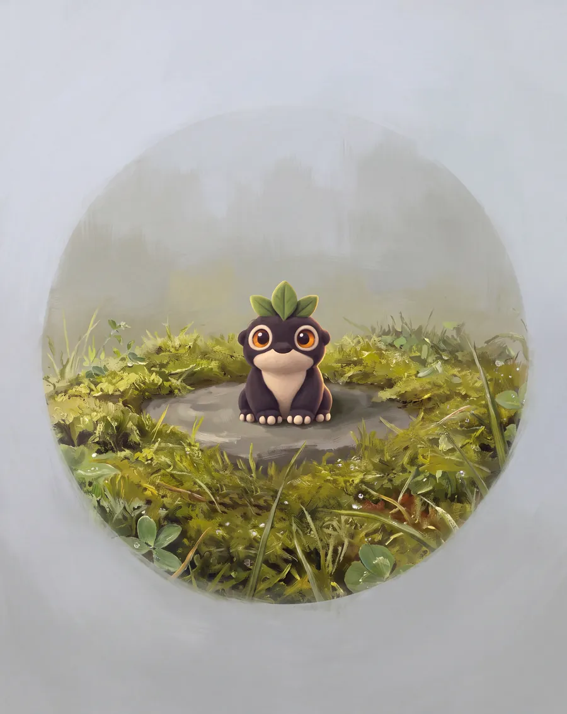
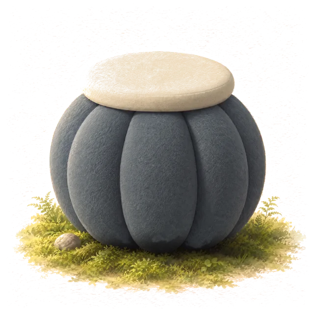
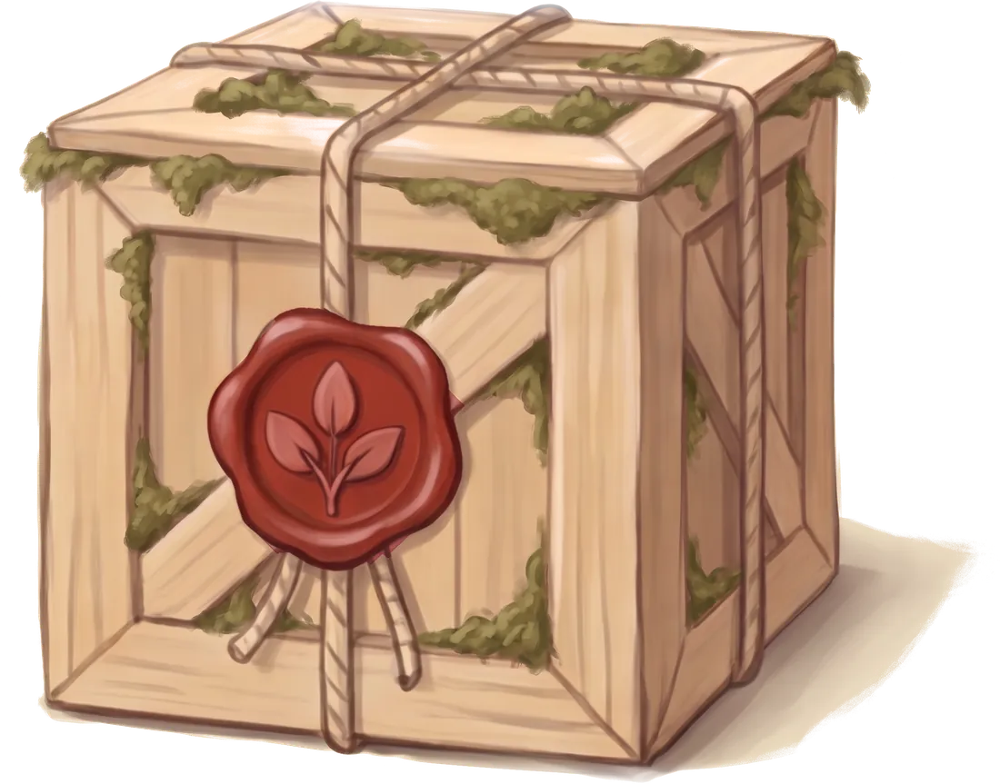
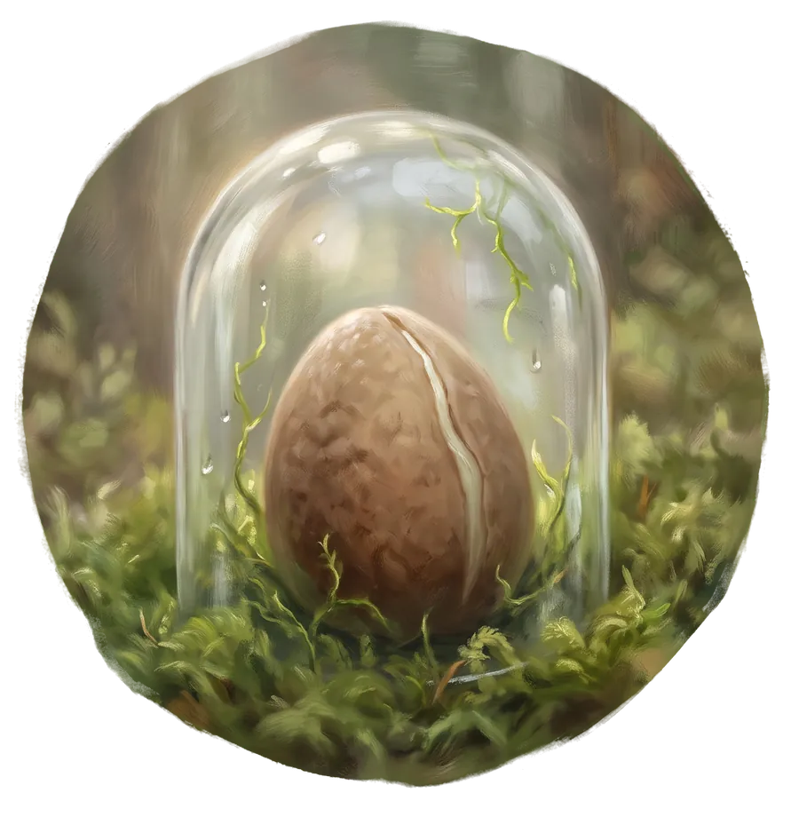

A small world, asleep under the fog.
Wake it with three little devices, and bring its mibis home.
How it plays
Out in your pocket. Home on your desk.

One trip out, one evening in. Over weeks, a family you raised from the wild.
From the painting of the kit. The game itself plays in your browser today.
How it playsFamilies
Every mibi keeps a secret.



Thistle wears Bramble's crest. Underneath, it carries Sable's bare head, where no one can see it.
So what will Thistle's young look like?
Cross Thistle with another Loika that carries a bare head, and about one young in four comes out bare. Every mibi has two copies of everything, one from each parent. The Station shows you what a cross could give, before you choose.
One trip
Find it. Bring it home. Find out what it is.
-

Call.
The fog lifts around you. Buried pods and warm stones show.
-

Dig up a pod.
A pod is a mibi asleep in its shell.
-

Seal it, dock it.
What you carry comes home in a crate. It opens only at the Station.
-

Read it, grow it.
Read the pod part by part. It grows in real minutes, then steps out.
Out there
Three things to gather. Each does its own job.
- Energy
- From warm stones and storm-struck ones. Lights the way, mends the Shield, and helps a pod grow.
- Data
- When a wild mibi eats from you, or settles because you kept still. Reads your pods.
- Essence
- Dew, fruit pressed on a stone, a tuft of fur. Grows a mibi from its pod.
The wild ones are never caught. What they give you, they give because you were patient.
The kit
Why not just an app?
- Stationis always on. Its vivarium keeps real hours on your shelf.
- Companiondoes one thing: goes out with you. Keys, not a touchscreen. Nothing pings you.
- Caddyis the dock. Seat the Companion, and the trip comes home.
No account. It plays offline, for good.

In design now
A lab for what the wild ones leave you.
Feed a wild mibi, watch it often, and it leaves you samples. At the Station's lab bench, each sample proves one hidden trait, and says why. Pictures for a quick look, the full genetics one key away.
What's being builtBefore you play
- What do I need?
- A browser, on a phone or a laptop.
- Is there an account or a chat?
- No account and no chat. No loot boxes, and no rewards for coming back every day.
- What if I'm away?
- Nothing gets sick or leaves while you're away.
- Can I hold it?
- Not yet. The devices are designed, not made. The game plays in your browser.